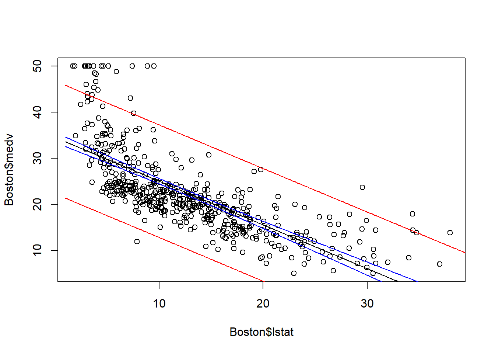

library(MASS)
fit <- lm(medv~lstat, data=Boston)
newx = data.frame(lstat=seq(1, 40, by=0.1))
pred.int <- predict(fit, newx, interval='prediction')
conf.int <- predict(fit, newx, interval='confidence')5 Simple Linear regression
\[ \require{physics} \require{braket} \]
\[ \newcommand{\dl}[1]{{\hspace{#1mu}\mathrm d}} \newcommand{\me}{{\mathrm e}} \]
\[ \newcommand{\Exp}{\operatorname{E}} \newcommand{\Var}{\operatorname{Var}} \newcommand{\Cov}{\operatorname{Cov}} \newcommand{\Mode}{\operatorname{mode}} \newcommand{\cor}{\operatorname{cor}} \]
\[ \newcommand{\pdfbinom}{{\tt binom}} \newcommand{\pdfbeta}{{\tt beta}} \newcommand{\pdfpois}{{\tt poisson}} \newcommand{\pdfgamma}{{\tt gamma}} \newcommand{\pdfnormal}{{\tt norm}} \newcommand{\pdfexp}{{\tt expon}} \]
\[ \newcommand{\distbinom}{\operatorname{B}} \newcommand{\distbeta}{\operatorname{Beta}} \newcommand{\distgamma}{\operatorname{Gamma}} \newcommand{\distexp}{\operatorname{Exp}} \newcommand{\distpois}{\operatorname{Poisson}} \newcommand{\distnormal}{\operatorname{\mathcal N}} \]
5.1 SLR
Definition 5.1 (A First-Order Model) \[ y=\beta_0+\beta_1x+\varepsilon \] where
- \(y\): The response variable
- \(x\): The independent variable (variable used as a predictor of \(y\))
- \(\Exp(y)=\beta_0+\beta_1x\): Deterministic component
- \(\varepsilon\): Random error component
- \(\beta_0\): \(y\)-intercept
- \(\beta_1\): Slope
For \(\varepsilon\), we have the following assumptions:
- \(\varepsilon\) follows Normal distribution for all \(x\).
- The mean is constant to be \(0\).
- The variance is constant \(\sigma^2\) (homoscedastic).
- The errors associated with two observations are independent.
In other words, \(\varepsilon_i\sim N(0,\sigma^2)\) i.i.d.
Definition 5.2 (Regression equation) Simple linear regression equation is \[ \Exp(y)=\beta_0+\beta_1x. \]
Definition 5.3 (Estimated regression equation) The estimated simple linear regression equation is \[ \hat y=\hat\beta_0+\hat\beta_1x. \] \(\hat\beta_0\) and \(\hat\beta_1\) are estimators of \(\beta_0\) and \(\beta_1\).
The purpose of the section is to estimate \(\beta_0\), \(\beta_1\) as well as \(\sigma^2\).
5.2 Estimation
Theorem 5.1 \[ \hat{\beta}_1=\frac{S_{xy}}{S_{xx}},\quad \hat{\beta}_0=\bar{y}-\hat{\beta}_1\bar{x}. \]
Click for proof.
Theorem 5.2
\[ s^2=, \]Click for proof.
Theorem 5.3 \[ \Var(\hat{\beta}_0)=, \quad \Var(\hat{\beta}_1)=, \]
Click for proof.
\[ \Var(\hat{\beta}_1)=\frac{1}{S_{xx}^2}\Var(S_{xy})=\frac{1}{S_{xx}^2}\Var\qty[\sum x_i(y_i-\bar{y})]=\frac{1}{S_{xx}^2}S_{xx}\sigma^2=\frac{\sigma^2}{S_{xx}}. \] \[ \begin{split} \Var(\hat{\beta}_0)&=\Var\qty(\bar y-\hat{\beta}_1\bar x)=\Var(\bar y)+\bar{x}^2\Var(\hat{\beta}_1)=\frac{\sigma^2}{n}+\bar x^2\frac{\sigma^2}{nS_{xx}}=\qty(\frac{1}{n}+\frac{\bar x^2}{nS_{xx}})\sigma^2. \end{split} \]Theorem 5.4 \[ \Var(s^2)= \]
Click for proof.
5.3 \(\beta_1\)
hypotheis: \(\beta_1\neq0\)
\(\hat{\beta}_1\) is normal, so t-test:
\[ t=\frac{\hat{\beta}_1-0}{s_{\hat{\beta}_1}}=\frac{\hat{\beta}_1}{s/\sqrt{S_{xx}}},\quad s^2=\frac{SSE}{n-2} \]
- one tailed test:
- Ha: \(\beta_1<0\): \(t<-t_{\alpha}\): \(p=\Pr(t<t_c)\), \(t_c<0\)
- Ha: \(\beta_1>0\): \(t>t_{\alpha}\): \(p=\Pr(t>t_c)\), \(t_c>0\)
- two tailed test:
- Ha: \(\beta_1\neq0\): \(\abs{t}>t_{\alpha/2}\): \(p=2\Pr(t>t_c)\), \(t_c>0\)
\(t_c\) is the computed value
\(\Pr(t>t_{\alpha})=\alpha=\Pr(\text{Type I error})=\Pr(\text{Reject }H_0\mid H_0\text{ is true.})\)
5.4 coeffcient of correlation
\[ r=\frac{S_{xy}}{\sqrt{S_{xx}S_{yy}}} \]
it is related to COV
\(\rho\) population coefficient of correlation, is estimated by \(r\)
Hypothesis:
\(t=r\sqrt{n-2}/{sqrt{1-r^2}}\)
5.5 coefficient of determination
\[ r^2=\frac{S_{yy}-SSE}{S_{yy}}=1-\frac{SSE}{S_{yy}} \]
proportion of total saple variability of the y explained by the linear relationship between y and x
About 100(r2)% of the sample variation in y (measured by the total sum of squares of deviations of the sample y-values about their mean ji) can be explained by (or attributed to) using x to predict yin the straight-line model.
\[ SSR=\sum(\hat y_i-\bar y)^2=\frac{S_{xy}^2}{S_{xx}} \]
5.6 predicted interval and confidence interval
\(\sigma_{\hat y}\)
Since \(\bar y\) and \(\hat{\beta}_1\) are independent, we have \[ \begin{split} \Var(\hat y(x))&=\Var(\hat{\beta}_0+\hat{\beta}_1x)=\Var(\bar y-\hat{\beta}_1(x-\bar x))=\Var(\bar y)+(x-\bar x)^2\Var(\hat{\beta}_1)\\ &=\frac1n\sigma^2+(x-\bar x)^2\frac1{S_{xx}}\sigma^2=\sigma^2\qty[\frac1n+\frac{(x-\bar x)^2}{S_{xx}}]. \end{split} \]
\[ \Var(y-\hat y)=\sigma^2+\sigma^2\qty[\frac1n+\frac{(x-\bar x)^2}{S_{xx}}]=\sigma^2\qty[1+\frac1n+\frac{(x-\bar x)^2}{S_{xx}}]. \]
Both pred.int and conf.int are matrices, where the first column is the fitted value, the second column and the third column are the corresponding interval bounds.
plot(Boston$lstat, Boston$medv)
lines(newx$lstat, pred.int[,1])
lines(newx$lstat, pred.int[,2], col='red')
lines(newx$lstat, pred.int[,3], col='red')
lines(newx$lstat, conf.int[,2], col='blue')
lines(newx$lstat, conf.int[,3], col='blue')